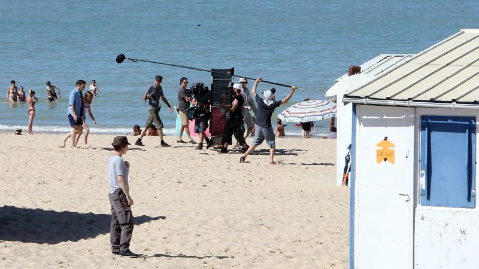

<p>Les organisateurs du Festival de Cannes ont dévoilé la
  sélection officielle de la 70e édition qui se déroulera
  du 17 au 28 mai. « Happy end » de Michael Haneke tourné en
  partie à Sangatte est en lice pour la Palme d’or, alors que
  « Les Fantômes d’Ismaël » du réalisateur roubaisien Arnaud
  Desplechin sera présenté hors compétition.
</p>
